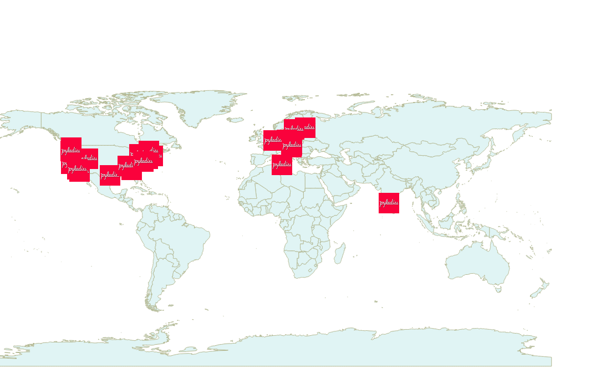

by Elena Oat and Tuikku Anttila
work projects
..and other stuff :)
learned to program in it
work (gis programming)
TA in Python class
international mentorship group
helps women engage in Python community
22 Earth/6 Europe
www.pyladies.com
PyLadies coverage
no similar groups
motivation
relaxed atmosphere
network -> future projects/work
meet, learn & fun
>>> CLadies
>>> False
>>> JavaLadies
>>> False
>>> PyLadies
>>> True
See you there!
students, developers, aspiring developers
both male and female
some work with Python every day
but many are just starting - with Python or programming in general
we try to make sure that everyone can learn something (or then teach others) ;)